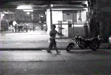

|
AUTOHYSTORIA
Raya Martin | Philippines 2007 | 92 min.
Format: 35mm
Material: DV
Original language: Tagalog
Script: Raya Martin
Camera: Albert Banzon, Raya Martin
Editing: Louie Quirino
Sound: Tengal Arvie Bartolome
Cast: JK Anicoche, Lowell Conales
Production: Raya Martin
German Premiere
In 1897, Andres Bonifacio, along with his younger brother Procopio, were executed in the mountains for treason and sedition. Bonifacio, founder of the Katipunan and one of the leaders in the Philippine Revolution of 1896, was accused of being a traitor to the revolution by a rival faction that included Andres Aguinaldo, the first president of the Philippine Republic. There are a number of dramatic variations of the account of their execution.
In 2006, a younger brother moves out of his parent’s house in the suburbs to a busier part of Manila after traveling in and out of the country for almost a year. His older brother moved out of the country a few years ago. The two have not seen each other in a while.
“Autohystoria” is a collection of digitized memory of dreams and reality.
Director’s Statement
Autohystoria mainly comes from the terms autobiography and history. It also refers to the words automatic and hysteria.
"Autohystoria" is an idea of how dreams are made: historical essence plus personal urgency equals subconscious image or message.
“All history is masturbation. It’s just a matter of who you fantasize about.”
Raya Martin , born in 1984, in Manila, The Philippines, attended a film course at the University of Diliman. After working as a writer and researcher for a variety of media, he started making short films. He now has a few features to his name as well. He was selected for the 11th edition of the Cinéfondation in Cannes. Raya Martin is an award winning director and the recipient of the best documentary prize at the 2005 .MOV Film Festival for The Island at the End of the World (2004).
Films: A Conscientious Object – or: The Reality of Olaf (kurz) 1999 | Bulaklak 2003 (kurz) | Ang isla sa dulo ng mundo (The Island at the End of the World) 2004 | Bakayson (The Visit) 2004 (kurz) | Millenarian Dreams 2004 (kurz) | Infancia en las islas de Filipinas, sin fecha 2005 (kurz) | Maicling pelicula nańg ysańg indio nacional (Short Film about the Indio Nacional) 2006 | Life Projections 2006 (kurz) | Long Live Philippine Cinema 2007 (kurz) | Autohystoria 2007 er Cut 2007 (Installation) | Hoofd 2007 (Installation) | Ash Tree 2007 (Installation)
back
|